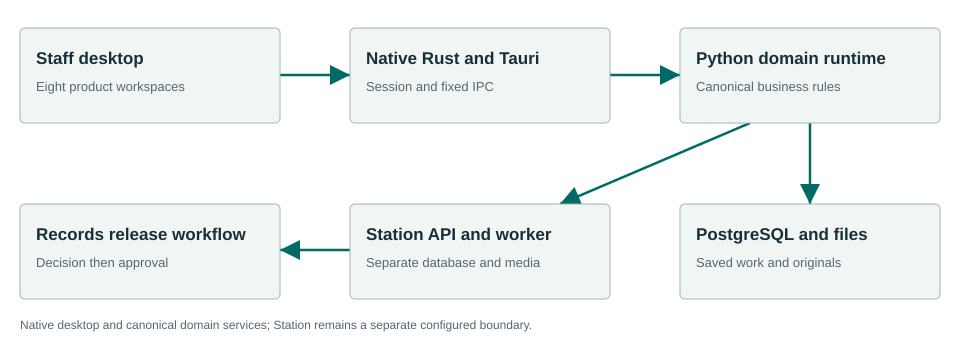
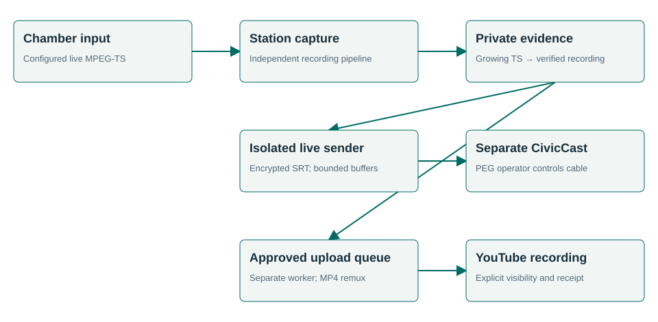

Townlight Beta 1 — Station delivery update, 31 October 2026. Signed Windows installer, source, documentation and acceptance. This edition documents the Sandbox-tested Station delivery additions. Existing component versions are retained. Earlier baseline results remain identified as historical evidence; the new acceptance report identifies the new installer.
Using this manual
Townlight Beta 1 connects nine municipal products around retained sources, named staff and explicit human decisions. This suite manual explains setup, shared operating procedures and cross-product handoffs. Each product has a complete staff and technical manual. The accepted desktop contains eight products; Station is separately configured. Standalone CivicCast remains a separate product.
Staff should start with First run and Connected workflows. Administrators should read Architecture, Configuration, Security and Recovery. Developers should use the full API reference and per-product source contracts. These instructions describe the Station delivery candidate rather than older public release selections.
Beta identity
| Identity | Value |
|---|---|
| Public documentation identity | Townlight Beta 1 |
| Installer version | 1.6.0.1 |
| Native desktop source version | 1.6.0-1 |
| Candidate artifact identity | Station delivery update; use the release SHA256SUMS.txt |
| Corresponding source | Updated Station delivery candidate source companion |
| Current owned software license | AGPL-3.0-only |
| Supported acceptance profile | Windows x64 fresh install; inspections-preview; separate Station configuration |
“Townlight Beta 1” identifies this coordinated beta delivery. It does not renumber the installer, native binary, Python packages or historical receipts. Component versions may differ. This edition accompanies the newly packaged and signed MSI containing the Station delivery additions. The native desktop and other native payload files retain their accepted signed bytes. Historical release pages and manuals describe their own versions and are not the download instructions for this Station delivery candidate.
Component versions
| Product | Package | Existing version |
|---|---|---|
| Core | civiccore | 1.3.0.dev1 |
| Records | civicrecords-ai | 1.8.0.dev1 |
| Meetings | civicclerk | 1.0.4 |
| Code | civiccode | 1.0.8 |
| Zoning | civiczone | 0.2.2 |
| Planning | civicplan | 0.4.0.dev1 |
| Permitting | civicpermit | 0.3.0+dev.1 |
| Inspections | civicinspect | 0.3.0+dev.1 |
| Station | townlight-station | 0.3.0 |
First run
- Obtain the identified signed Station delivery candidate and its corresponding-source companion from the beta coordinator. The landing pages in this documentation are not an installer download service.
- On the intended fresh Windows test installation, verify the MSI hash and publisher signature before installing. Preserve unrelated profiles and recovery material. This candidate has fresh-install acceptance; historical in-place upgrades are unverified.
- Launch Townlight under the intended named Windows account. Choose
the storage folders. Select Townlight Inspections
candidate (
inspections-preview) for all eight desktop products. A narrower default selection will not expose all workspaces. - Enter the city profile, time zone and contacts. Create the first named local administrator, sign in and choose protected backup storage. Continue without local AI is valid for the deterministic workflows.
- Run Health Check and wait for readiness. Open Townlight. In System Health select Finish Records Migration to activate the canonical Python/PostgreSQL runtime. Do not fabricate migration receipts or seed accounts.
- Create named staff through Settings. Import authorized sources using each product’s source library. All examples in this package are synthetic; they are not municipal authority.
- Provision Station separately if it is part of the beta exercise. Selecting the desktop composition does not start or configure Station. Configure vision explicitly only if automatic photo drafting is selected.
Daily workflow
Sign in with your own named account. Confirm the selected workspace, open a saved record and check its source/version before editing. Save the work, record the intended review and inspect its audience. Use an explicit export or cross-product selection when a copy is required. Sign out when finished. Use the product manual for its field-level procedure.
Use your own named account and save before leaving a screen. A saved draft is durable; unsaved form text may not be. If a write has an unknown result, reopen its record before repeating it.
Read source jurisdiction, dates, citation, version and visibility. A copied source hash identifies exact bytes, not their legal applicability. If a source changes or permission is removed, resolve the source problem rather than substituting stale cached content.
Keep originals and derivatives separate. Review the intended audience before export. A public summary excludes private fields only through the applicable copy contract and your review. A renamed private packet is still private content.
Drafting, review, approval, attachment, export, fulfillment and publication are separate operations. A Townlight workpaper does not itself adopt law, issue a permit, impose a fine or release a records response. The responsible staff member records the applicable decision.
Connected workflows
Meeting capture to a Records response
- Meetings staff create the meeting and assign agenda items; save the canonical records.
- An authorized Station operator opens a one-use staff launch, chooses that meeting and a configured live input or managed file, then starts capture.
- Stop and wait for completed validated media. Inspect the content and provenance. Partial/failed attempts stay separate.
- Records-authorized staff explicitly attach the completed recording to an existing request. The receiver verifies bytes/hash and retains one locked private original, including on an identical retry.
- Records separately prepares any release copy, records release/redact/exempt decisions, approves exact response text, exports the response/package and fulfills the request. Capture and handoff do not publish it.
Legislation to cited staff guidance
Code imports a retained source and creates a proposal connection to actual Meetings evidence. Authorized staff record adoption, then a separate codification decision. Zoning uses the cited Code context with imported parcels and rules. Permitting and Inspections select permitted cited authority for reviewed workpapers. An import, draft or meeting motion does not replace the actual adoption/codification decisions.
Policy and land-use evidence to Records
Planning imports adopted policy revisions, including neighborhood applicability, and selects permitted Meetings/Zoning evidence. Staff save and review the exact analysis, then create the audience-specific snapshot. Planning initiatives/amendments retain their own history. Permitting and Inspections independently review their saved cases and prepare separate Records copies. Records rechecks the source/version/hash and owns the response release. Private notes and contact/property details must not be copied by relabeling a staff packet.
Shared foundation and recovery
Core provides shared contracts, named account/session support, ingestion/task helpers and coherent recovery. Supporting Notice and Access are included where selected. These relationships do not establish all 56 directed product pairs, universal vendor integration or unrestricted federation.
Product guide directory
| Product | Purpose | Manual |
|---|---|---|
| Core | A shared foundation for accountable municipal work. | Core |
| Records | From request intake to a deliberate release. | Records |
| Meetings | Keep the agenda, decisions and evidence connected. | Meetings |
| Code | Trace every section to its source and history. | Code |
| Zoning | Bring parcel context and cited rules into one review. | Zoning |
| Planning | Connect policy, analysis and municipal progress. | Planning |
| Permitting | Prepare a complete, cited intake for staff review. | Permitting |
| Inspections | Preserve evidence and review every draft finding. | Inspections |
| Station | Capture the meeting and preserve its evidence. | Station |
Architecture

The drawing shows the principal staff/evidence path. Native commands carry trusted identity to Python business services; PostgreSQL and retained original files hold durable state. A downstream copy does not silently transfer decision authority. Station has its own configured authority/media boundary, database and mutable files. The connected-workflow text supplies the drawing’s reading order and accessibility alternative.
Existing product operating guides
Use each product’s operating chapter for its actual controls, inputs, readback and refusal states. The suite coordinates evidence and authority; it does not replace those product decisions. Station requires an explicitly configured paired runtime and its separate operating procedure. The Code importer submits directly; Planning’s source library has its own preview/confirmation flow.
- Core operating procedure.
- Records operating procedure.
- Meetings operating procedure.
- Code operating procedure.
- Zoning operating procedure.
- Planning operating procedure.
- Permitting operating procedure.
- Inspections operating procedure.
- Station operating procedure.
Technical specifications
Runtime and storage
The accepted package targets Windows x64 fresh installation. Its native shell uses Rust 2021, Tauri 2 and Microsoft WebView2; browser assets are JavaScript built with Vite 8.1.6. This describes the native desktop frontend; Station has a separate React operator, specified below or in its product manual. Canonical business workflows use bundled CPython 3.13.5, FastAPI, Pydantic, SQLAlchemy and Alembic, with PostgreSQL 17 / PostGIS and managed original files. The installed runtime tested here contains FastAPI 0.162.0. Package minimum Python requirements can differ from the bundled executable; the metadata reference preserves both. No stack rewrite is implied by the beta label.
The native transport is fixed to loopback
127.0.0.1:15480; PostgreSQL uses the configured local
runtime port (default 15432). Optional local model service
defaults to 127.0.0.1:15434. Those are deployment defaults,
not internet endpoints. The runtime has health, module and readiness
endpoints; readiness is stronger than process existence. The task queue
is the existing local Core task infrastructure, not an assertion that a
separate Redis service is required for this desktop composition.
The default native profile is %LOCALAPPDATA%\CivicSuite;
the historical directory name remains part of compatibility. Do not
rename it to Townlight. A configured TOWNLIGHT_PROFILE_ROOT
must be absolute. Local configuration and secrets live under that
profile; protected managed files and database state must be backed up
coherently. Source/runtime identity is distinct from a product’s display
label.
Data and consistency
Each product retains the records described in its manual. The common desktop uses one canonical PostgreSQL-backed domain with product-owned tables/schemas and managed file storage. Station has a separate database and media store.
Versioned saves use expected prior revision identifiers where defined. Reopen and reconcile on conflict. Exact exports and handoffs use source IDs, current visibility, revision and SHA256. Review belongs to the saved revision and does not transfer silently to edited text. Database changes use the owning product’s migrations; a request or readiness check is not an authorization to mutate schema.
Capacity and platform statements
This beta has synthetic single-profile workflow evidence. It does not have a published benchmark for concurrent staff capacity, minimum RAM/CPU, large-source limits or a field SLA. Do not turn a developer machine’s specification into a supported minimum. Installer size is 2,092,122,112 bytes before installation; allow additional disk for extracted runtime, database, originals, exports, media and backups. Select equipment/storage after sizing those actual workloads.
The exact runtime payload lock records pinned files, sizes and hashes. The component metadata records shipped dependency declarations. These references are more precise than a manually copied dependency list. Third-party and historical license notices must accompany their matching payloads.
Station operator and media components
The native desktop frontend above is distinct from Station’s browser
operator. The pinned operator package
townlight-station-operator is version
0.1.0, using React/react-dom 19.1.1,
TypeScript 5.9.2, Vite 7.3.7 and the
React Vite plugin 5.0.2. Station serves its built assets through its own
operator API. Its Python control/API package remains
townlight-station 0.3.0, while its retained storage
identity remains 0.1.0. These identities have different
purposes and are not renumbered.
The separate pinned CivicCast-derived media engine uses Python/native GStreamer processing and bounded media children. It is not the standalone CivicCast application. Station’s control database, data root, service/configuration and update identity remain independent. This describes the current mixed stack; no runtime rewrite or CivicCast migration is implied.
Configuration and administration
Native deployment configuration
Use Setup, Settings and System Health for supported staff operation.
Administrators provision folders, backup storage, named accounts and the
city profile. Select inspections-preview for the full
eight-workspace desktop. Station remains a separate service boundary. Do
not use a standalone product’s demo server as a substitute for the
installed workspace.
Technical deployments use TOWNLIGHT_PRODUCT_PROFILE,
TOWNLIGHT_PROFILE_ROOT, DATABASE_URL,
CIVICSUITE_RUNTIME_PORT, PORTAL_MODE and the
runtime-managed secret files. Treat database URLs and native session
proofs as secrets. The installed native domain runtime explicitly
refuses non-loopback binding. PORTAL_MODE=private is the
accepted posture; changing it does not by itself commission an internet
portal, authentication provider or reverse proxy.
The isolated documentation exporter sets a fictional profile and unusable synthetic database origin only to read schemas; those values are not deployment configuration. Keep deployment values in the intended process/account scope. An already-running process does not automatically inherit later environment edits.
API and integration examples
Native command example
The following JavaScript belongs in the existing trusted Townlight
frontend/development environment with invoke imported from
@tauri-apps/api/core. It is not a command for an arbitrary
web page or an instruction for nontechnical staff. IDs must come from
records created in an isolated synthetic exercise.
import { invoke } from '@tauri-apps/api/core';
const result = await invoke('meetings_domain_request', {request: {operation: 'get-proceedings', id: meetingId}});
console.log(result);Trusted local HTTP example
An administrator/developer can inspect an already-configured isolated runtime from a trusted local process. This PowerShell example reads the signed-in synthetic profile’s existing proof into memory; it does not create a user, seed a session, reveal the proof in output or bypass a permission check. Do not use real city data in development examples. A read response does not prove approval or publication.
$profilePath = Join-Path $env:LOCALAPPDATA 'CivicSuite'
$sessionPath = Join-Path $profilePath 'config\local-session.json'
$session = Get-Content -LiteralPath $sessionPath -Raw | ConvertFrom-Json
$headers = @{ 'X-Townlight-Session' = $session.session_hash }
Invoke-RestMethod -Uri 'http://127.0.0.1:15480/desktop/v1/meetings/station/catalog' -Headers $headers
Remove-Variable session, headersA synthetic write with subsequent readback
This example demonstrates the existing Meetings HTTP contract in an isolated exercise. It is intentionally fictional. It does not start a service. Its authentication setup is included so it can be run independently under the signed-in synthetic account. If a write times out, inspect current records before repeating it.
$profilePath = Join-Path $env:LOCALAPPDATA 'CivicSuite'
$sessionPath = Join-Path $profilePath 'config/local-session.json'
$session = Get-Content -LiteralPath $sessionPath -Raw | ConvertFrom-Json
$headers = @{ 'X-Townlight-Session' = $session.session_hash }
$body = @{
title = 'Synthetic documentation exercise'
scheduled_start = '2026-11-05T18:00:00-07:00'
location = 'Synthetic room'
meeting_type = 'regular'
} | ConvertTo-Json
$meeting = Invoke-RestMethod -Method Post `
-Uri 'http://127.0.0.1:15480/desktop/v1/meetings/meetings' `
-Headers $headers -ContentType 'application/json' -Body $body
Invoke-RestMethod `
-Uri ('http://127.0.0.1:15480/desktop/v1/meetings/meetings/' + $meeting.id) `
-Headers $headers
Remove-Variable session, headersThis write requires Meetings to be enabled and the signed-in staff role to permit it. It is a cross-suite integration example; for this product’s request models, use the complete technical reference below.
Complete technical contract
Read the Suite API reference for every documented operation, request field, constraint, response declaration and source supplement. Download the OpenAPI JSON for tools. For Station this is the suite-side schema only; its separate service contract is documented in the API supplement. The reference directory includes configuration/source inventories, dependency declarations, native command contracts, MCP signatures and candidate evidence.
MCP and automation boundary
No direct product MCP server is exposed by the accepted Townlight
desktop or Station boundary. Do not configure an invented
townlight mcp command or assume an AI client has staff
permissions. The integration surfaces for this beta are native IPC, the
documented HTTP APIs, source bundle imports, exact exports and the
existing Station CLI.
The bundled transcription code includes a TextFlowKit MCP
adapter as a separate source capability. It offers job-based
transcribe_media, get_transcript,
list_jobs, get_job_status and
export_transcript, and additional tools declared in that
adapter. It uses stdio first and optional Streamable HTTP, with the MCP
SDK as an optional extra. It is not automatically launched,
authenticated as Townlight staff or accepted as a Townlight product MCP
deployment. This documentation does not add such a service.
For a transcription client already provisioned separately, an illustrative tool call is:
{"name":"get_job_status","arguments":{"job_id":"synthetic-existing-job-id"}}Use a job ID returned by that transcription service. This example does not create a Townlight record or bypass its review/Records handoff. The exact optional adapter tool signatures are supplied in the MCP source reference. Station meeting capture does not become live speech recognition because this optional donor adapter exists.
Security and permissions
Use your own named account and save before leaving a screen. A saved draft is durable; unsaved form text may not be. If a write has an unknown result, reopen its record before repeating it.
Read source jurisdiction, dates, citation, version and visibility. A copied source hash identifies exact bytes, not their legal applicability. If a source changes or permission is removed, resolve the source problem rather than substituting stale cached content.
Keep originals and derivatives separate. Review the intended audience before export. A public summary excludes private fields only through the applicable copy contract and your review. A renamed private packet is still private content.
Drafting, review, approval, attachment, export, fulfillment and publication are separate operations. A Townlight workpaper does not itself adopt law, issue a permit, impose a fine or release a records response. The responsible staff member records the applicable decision.
The native session is validated and mapped to a persisted SQL identity. An editable actor/reviewer label is not authentication. Product/module permissions and source visibility apply at the server boundary. Revoked/unavailable authority fails closed for new Station operations; a previous permission result is not a perpetual authorization.
Use protected local folders, account permissions and credential storage. Never include the native session file, database passwords, provider keys or unredacted support bundles in a public issue or generated public documentation. A local public view is not automatically a secured internet deployment. Keep network exposure and real equipment acceptance specific to the chosen beta site.
Backup recovery and maintenance
Save work and use Core’s canonical Backup Now before maintenance. That operation stops writers. Preserve the coherent profile/database/document backup and its receipt, then use Start to resume. A source export is not a full backup.
Use Restore Latest Backup through the supported controls. If the result says Restore needs service start, use Start, then Check, and reopen a known record. Do not repeat restore merely because services need to start. The fresh-profile acceptance verified that a fulfilled request survived restore and a post-backup marker did not.
Keep Station’s dedicated database and media evidence together in its own backup. Core’s native-profile backup must not be assumed to include an external Station data directory. Stop writers during a coordinated backup. Preserve failed media attempts and logs.
On failure, record the time, selected composition, component/installer versions and exact message. Check System Health for stopped, starting, ready or failed dependencies. Use the existing Retry control after readiness; do not create duplicate business records to refresh a stale view. Share only a redacted diagnostic bundle. Preserve secrets, original evidence, recovery material and unrelated installations.
Troubleshooting
| Symptom | Likely meaning | Next action |
|---|---|---|
| Workspace absent | Wrong product composition or unavailable canonical runtime. | Check selected composition; activate through Finish Records Migration; wait for readiness. |
| Cannot sign in / 401 | Missing or expired named account session. | Sign in normally; reopen a Station launch ticket if applicable. |
| Permission denied / 403 | Account, module, source or browser-origin permission. | Ask the authorized administrator to inspect the intended permission; do not invent role headers. |
| Save conflict / 409 | The saved revision, expected source hash or lifecycle changed. | Keep edits, reopen current state and reconcile deliberately. |
| Invalid input / 422 | Required field, format, geometry, source envelope or state is invalid. | Read the field detail and correct the input/source; preserve originals. |
| Service unavailable / 503 | Database, schema, connected source or configuration unavailable. | Inspect System Health and the named dependency. Preserve work; retry only after readiness. |
| Export refused | Missing exact review, approval, audience or source authorization. | Read the refusal and complete the owning product’s explicit decision. |
| Restore needs service start | The snapshot was restored but services have not resumed. | Use Start, then Check and verify a saved record; do not blindly repeat restore. |
Verified workflows and limits
| Product | Recorded result | Precisely exercised |
|---|---|---|
| Core | PASS | Normal empty-profile setup; canonical activation; UI-created staff and sign-in; staff denied user administration; coherent backup, mutation, restore, Start/Check and retained/absent record readback. |
| Records | PASS | Intake, note, original attachment/readback, separate release copy, explicit release decision, draft/approval, approved response and release package exports, fulfillment/readback and native workspace. |
| Meetings | PASS | Meeting/agenda, packet assembly, motion/vote, supplied transcript, reviewed/adopted minutes, restricted local archive and proceedings readback; Code decision integration. |
| Code | PASS | Synthetic official source import, exact citation/history/export; proposal into Meetings, recorded adoption and separately codified version; native connection readback. |
| Zoning | PASS | GeoJSON/PostGIS import, cited dimensional rule, parcel answer, staff review/history/snapshot and native workspace. |
| Planning | PASS | Adopted source import with neighborhood, saved/reviewed analysis and snapshot, persisted initiative/history and draft amendment, public explorer neighborhood readback and native workspace. |
| Permitting | PASS | Retained requirement import, source-grounded materials/pathway/timing, saved intake/review, separate hash-checked Records copy and private handoff; contact exclusion; native workspace. |
| Inspections | PASS | Retained original/hash, supplied observations and voice summary, saved/reviewed case/readback, separate exact Records copy and private handoff; address exclusion; native workspace. |
| Station | PASS | Actual native staff session and normally created meeting; headless operator live start/stop, decoded generated audio/video, served hash, private Records readback, idempotent locked original and logout. |
The following baseline results come from the previously accepted signed candidate’s fresh normal-profile Sandbox exercise: real native IPC/HTTP/PostgreSQL and selected headless controls. All accounts, source bundles and media were synthetic. The guest install/uninstall and recovery passed, and the owned Sandbox stopped. No host installed application or standalone CivicCast was changed. Those baseline receipts are retained for unchanged workflows. The accompanying ACCEPTANCE.md records the separate installed verification and exact identity of this new Station delivery candidate.
The workflow matrix identifies raw receipt filenames. The evidence index retains their original hashes; raw receipts remain in the private beta handoff rather than being silently republished with the documentation site.
The limits remain: actual city field acceptance and equipment/network commissioning; Station automatic provisioning/SCM commissioning; every UI/role combination; field recognition accuracy; and historical in-place upgrades are not certified. They are not five invented feature requirements. Fresh-install controlled beta handoff remains the accepted scope. This package makes no city-deployment, publication or general-availability claim.
Terms of service and license
Scope and status
These terms describe the Townlight Beta 1 software and this documentation package. This is a locally prepared private beta, not a hosted-service subscription, a city deployment agreement or a public release. No uptime commitment, support response time, indemnity, data-processing agreement or paid service is created by these documents. A separate signed agreement, if any, governs services it actually provides.
Software license and rights
Current Townlight-owned distributions identified in this candidate use AGPL-3.0-only. The full license is supplied with this documentation and with the source companion. The license governs rights to run, copy, modify and convey the covered software; these operational terms do not add restrictions to those rights. Historical grants and dependency licenses retain their own terms. CivicCast remains a separate product and is not relicensed by this documentation work.
When conveying covered software, retain applicable notices and provide the corresponding source and installation/build information required by the license. For a modified version supporting remote network interaction, follow section 13’s source-offer requirement. The companion archive identifies the source for this candidate; a link to a different public branch is not a substitute for the matching source. Read the supplied license for the complete conditions. See the GNU license reference and GNU licensing FAQ.
Data ownership and access
Importing a document does not transfer its ownership or grant permission to publish it. The operating organization controls its accounts, access decisions, lawful source use, retention and review/release policy. Keep resident information, credentials, private notes and restricted evidence in their authorized locations. Documentation examples contain fictional data. No real city account, credential or record is required to exercise these examples in an isolated test environment.
Local operation and external processors
The accepted beta workflow is local and uses named staff accounts. Station has separate storage and credentials. Configure backup destinations and optional model/network providers deliberately. A configured external provider may receive submitted prompts, images or audio according to that configuration and provider’s terms; this documentation does not promise that every optional configuration is offline. An email outbox or local public view does not establish external delivery or an internet deployment. This static documentation site has no analytics, account collection or remote font dependency.
Staff decisions and source applicability
Staff verify the jurisdiction, source currency, permissions, citations and proposed audience. Model output and generated guidance require review. No draft is automatically an official legal interpretation, zoning determination, permit approval, fee assessment, enforcement notice or records-release decision. Official permit fee authority remains with the adopted source and responsible organization; imported amounts do not become a new authoritative calculation.
Beta operation and recovery
Use the identified candidate in its supported fresh-install scope. Preserve backups and original evidence. Test physical equipment and chosen network/service configuration before relying on them. The supplied acceptance describes selected synthetic workflows, not every screen, vendor, field condition or upgrade. Operators decide whether a particular deployment meets their own operational obligations.
Warranty and liability
The covered software’s warranty and liability conditions are those in sections 15–17 of the supplied AGPL and any applicable separate written undertaking. This documentation creates no additional warranty or limitation beyond those terms. Third-party software is subject to its retained license notices. Nothing here removes rights that applicable law makes nonwaivable.
Support and incident reporting
Use the project’s existing SUPPORT and SECURITY guidance for its matching repository. Report reproducible behavior with the version, operation and redacted logs. Do not put credentials, resident records or unredacted evidence in a public issue. Coordinate sensitive reports through the channel designated in SECURITY. No new support address or service commitment is invented here.
Ending a beta exercise and document changes
When an organization ends testing, it controls retention/export and removes access according to its policy. Uninstall may retain data; back up and inspect the selected removal options. Ending an exercise does not revoke rights already granted by AGPL. Later software/documentation versions must identify their changed candidate and scope; historical receipts retain their original identities. These terms do not claim that a city has accepted a contract merely by reading a manual.
Glossary
| Term | Meaning |
|---|---|
| Approval | An explicit authorized decision on the saved text/artifact. It is separate from saving or attachment. |
| Canonical record | The owning product’s retained identity and saved version, rather than an editable copied label. |
| Composition | The selected set of desktop modules; inspections-preview exposes the eight staff products. |
| Corresponding source | The source/build material matching the delivered covered program, subject to its license. |
| Derivative / Records copy | A separately prepared document with its own intended audience and hash. |
| Hash / SHA256 | A fingerprint of exact bytes. It detects change; it does not establish legal authority. |
| Idempotency | Repeating the same identified request has the same intended effect; changing its payload can be refused. |
| IPC | The native desktop command boundary between its browser interface and Rust host. |
| MCP | Model Context Protocol; no direct Townlight product server is enabled by this beta. |
| Original | Retained source bytes. A reviewed derivative does not replace them. |
| Provenance | Source, version, date, actor and relationship information retained with evidence. |
| Revision | An immutable saved version. Later edits do not inherit an earlier review automatically. |
| Snapshot | A fixed audience-specific copy tied to a source/reviewed revision. |
| Station | Townlight’s separate media boundary using a pinned CivicCast-derived engine; standalone CivicCast remains separate. |
Alphabetical subject index
- Accounts and authentication — Security and permissions.
- AGPL and source — Terms of service and license.
- API contracts — API and integration examples.
- Architecture — Architecture.
- Backup — Backup recovery and maintenance.
- Beta version — Beta identity.
- Configuration — Configuration and administration.
- Evidence and acceptance — Verified workflows and limits.
- Fees and official decisions — Terms of service and license.
- First run — First run.
- Handoffs and audience — Connected workflows.
- MCP — MCP and automation boundary.
- Originals and provenance — Security and permissions.
- Recovery — Backup recovery and maintenance.
- Staff procedures — Daily workflow.
- Station configuration — Configuration and administration.
- Technical stack — Technical specifications.
- Troubleshooting — Troubleshooting.
Operating subject links
- Existing product operating guides — Existing product operating guides.
Source and document control
This edition is authored from the immutable corresponding-source companion, the generated installed-domain schema and the retained workflow receipts. Component version numbers are retained. The private MSI has its own new hash and signing receipt. Historical release tags and their artifacts remain unchanged.
- Source inventory and file hashes
- All component metadata
- Installed domain OpenAPI
- Workflow matrix
- Full AGPL text
Station delivery in this Station delivery candidate
Station now offers two explicit delivery paths. During a live recording, staff may select an administrator-configured encrypted SRT feed to the separate CivicCast product. The PEG operator controls local cable take-to-air. After completion, staff may approve an upload copy to the Station-configured YouTube account, select its title and visibility, and inspect the durable receipt. The private canonical recording and existing Meetings → Station → Records handoff remain independent.

These paths reuse the pinned CivicCast media and YouTube client code. A separate sender isolates network backpressure from capture, and a separate upload worker prevents long uploads from blocking recording. YouTube starts no live broadcast here. Standalone CivicCast has separate installation, identity, storage and operator control.
Administrators run the explicit Station schema4 migration and provision Station-only OAuth and SRT pairing credentials. Existing component versions are retained. Preparation failures can be explicitly retried; uncertain external uploads require manual reconciliation and are never silently duplicated. No real credentials or external video publication are used in synthetic development acceptance.
See the Station manual delivery section for full staff steps, architecture, configuration, API request examples, permissions and recovery. Existing eight-product workflows are unchanged; their accepted evidence is retained rather than presented as a new run.
Delivery subject index
- CivicCast live feed
- YouTube: explicit completed recording upload; visibility; receipt and reconciliation.
- Schema4: durable upload intent; existing evidence retained.